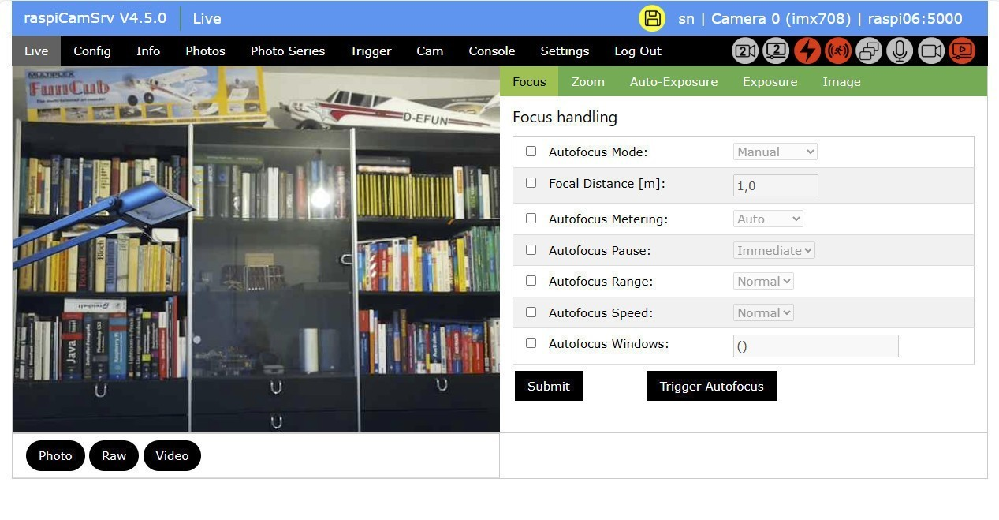
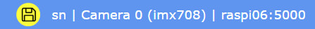

RaspiCamSrv User Guide

The variant of the user interface, described on this page, refers to the case where at least one camera (CSI or USB) is available.
If this is not the case, refer to the reduced user interface.
Startup
When the server on a Pi is running and the Pi is reacheable through the network (usually WiFi), you can connect with a browser using the Pi address ('raspi05' in the example below) with the Flask port number, usually 5000, e.g.:
http://raspi05:5000
Login
The system will request an initial registration and a login and subsequently open the Live application screen.
For error handling, see raspiCamSrv Troubleshooting
For interoperability, raspiCamSrv provides an API which allows access to selected functions through web services.
CSI-/USB-Cameras
In addition to CSI cameras (2 for Pi 5), you can connect as many USB cameras as physical USB ports are available.
However, at a time, raspiCamSrv will only operate two of them simultaneously.
Related to usability in the UI, you will almost see no difference between CSI and USB cameras. Where they are important, they are handled in the UI and described in their context.
Application Screen

Elements
Title bar
On the left side, the title bar shows
- the current version of raspiCamSrv
If an update to this version is available, the version number is shown in yellow:
(See Settings/Update dialog)
On the right side, the title bar shows
- the current server connection
- the active camera as advertised by Picamera2
- the active user
- A special icon will indicate unsaved configuration changes:

It will vanish after changes have been saved with Settings/Configuration/Store Configuration or after a stored configuration has been loaded.
The icon can be pressed (2 times) to save unsaved changes.
On the left side, the title bar shows the application name (raspiCamSrv) and the current screen.
Main Menu
The main menu (black background) allows navigation to different screens:
- Live shows the Live Screen which includes functionality for image control as well as photo- and video taking
- Config gives access to camera Tuning and camera Configuration where basic camera configurations can be specified for different scenarios.
- Info opens the Camera Information page with information on the system and installed cameras as well as Properties and Sensor Modes of the active camera.
- Photos shows the Photos where the currently available photos and videos can be browsed and inspected in detail.
- Photoseries opens the Photo Series page for definition and control of photo series.
- Trigger Allows configuring and controlling triggered actions, based on Motion Capturing as well as on configured events from GPIO-connected sensors
- Cam gives access to the dialogs for Web Cam access; Multi Cam for multi-camera control.
If a Stereo Camera configuration is activated, it hosts also the dialogs for Camera Calibration as well as for Stereo Vision. - Console is dedicated to manually controlled interactions with the Raspberry Pi OS or with GPIO-connected Actors, such as motors, servos or LEDs.
- Settings opens the Settings page for all kinds of static configurations for raspiCamSrv.
- Log Out will log the active user out and direct to the Log-In Screen
NOTE: Selecting an option on the main menu will issue a request to the server with a specific URL and, thus, refresh the screen.
Submenu
Many of the raspiCamSrv pages, selected by a Main Menu option have a submenu.
Submenues are indicated by a green background.
NOTE: Selecting an option on a submenu will not issue a new request and, thus, will not refresh the screen with new information from the server.
Instead, submenu options activate different sections of the currently loaded page.
However, Submit buttons on a page section apply only to data shown on the active section and not to data on other sections of the same page.
Process Status indicators
On the right side of the menu bar there is a group of status indicators for the different background processes:

From right to left, these indicate the status of
- Live stream thread for active camera
- Video thread for the active camera
- Recording audio along with video for the active camrera
- Photo Series thread
- Motion Capture thread
- Trigger thread
- Live stream thread for the second camera, if available (see Web Cam or Multi-Cam)
- Video thread for the second camera, if available (see Multi-Cam)
Red color indicates that a process is active whereas gray indicates that it is inactive.
In the case of motion capture or event handling,
- yellow color indicates that the process is active but currently not scheduled to register events
- turquoise color indicates that the motion capture process runs in test mode


Message Line
At the bottom of the screen, there is a message line where application messages will be shown when necessary.
Streaming
raspiCamSrv supports streaming MJPEG video.
The straming URLs are
http://<server>:<port>/video_feed for MJPEG video with Active Camera
http://<server>:<port>/photo_feed for photo snapshots with Active Camera and low resolution
http://<server>:<port>/photo_feed_hr for photo snapshots with Active Camera and high resolution
http://<server>:<port>/video_feed2 for MJPEG video with Second Camera
http://<server>:<port>/photo_feed2 for photo snapshots with Second Camera and low resolution
http://<server>:<port>/photo_feed2_hr for photo snapshots with Second Camera and high resolution
All URLs can be accessed without authentication if the checkbox Req. Auth for Streaming on the Settings screen is deactivated.
If this checkbox is activated, a user must have logged in to raspiCamSrv once in the same browser session which shall be used for streaming. A streaming or snapshot request in a browser session without login will redirect to the login screen.
In the web client, an active streaming server is indicated with the process status indicators as
if only the active camera is streaming or
 if both cameras are streaming or
if both cameras are streaming or
 if if only the second camera is streaming
if if only the second camera is streaming
A live stream is shown in in the Live Screen for the active camera or on the Web Cam or Multi-Cam pages for both cameras.
If Stereo Vision is active, both cameras are streaming:


When these indicators turn yellow, this indicates that the additional stereo camera process is active, serving the stereo vision stream.
The streaming servers are automatically shut down if no client has been streaming within the last 10 seconds.
This is independently controlled for both cameras as well as for the stereo camera process.
For example if one is working in other dialogs rather than Live Screen, straming is not used and the streaming servers are shut down, which is indicated by

Streaming is automatically reactivated, if a streaming client connects, for example if the Live Screen is activated.
Other clients, either connecting directly through the streaming URL or by using the raspiCamSrv web client, will also activate the streaming servers.
Streaming of the active camera can be deactivated, if a raspiCamSrv task is executed which requires exclusive access to the camera because of a specific Configuration which is not compliant with the configuration required for streaming (for more details, see raspiCamSrv Tasks and Background Processes).
NOTE
For a full understanding of application details, users should familiarize with the official document Raspberry Pi - The Picamera2 Library.
The document version, on which this raspiCamSrv release is based, is also included in this documentation: picamera2-manual.pdf
Media Viewer
In several dialogs, the raspiCamSrv UI shows photos or videos which have been taken with the camera system.
Although most of these are larger than typical thumbnails, they may be too small for more detailed inspection of quality or image details.
Therefore, raspiCamSrv provides a Media Viewer which can be started by clicking on the image or video.
The availability of a Media Viewer is indicated by a modified cursor when hovering over the image.

Klicking on the image, will open a new browser tab with the selected image or video:

The tab can be separated from the main browser window and zoomed to screen size or full screen mode.
The file name of the image/video is shown as tab title.
Media Viewer for videos
When videos are shown with controller icons for play/stop etc., only the upper area is sensitive for starting the media viewer whereas the lower area is used for controlling the video playback.

The Media Viewer browser tab will include its own set of controls:

Live Stream
The live stream, available in dialogs Live, Cam and Trigger/Motion are not enabled for Media Viewer activation. Instead, the live stream can be directly opened in a separate window using the Streaming URL.